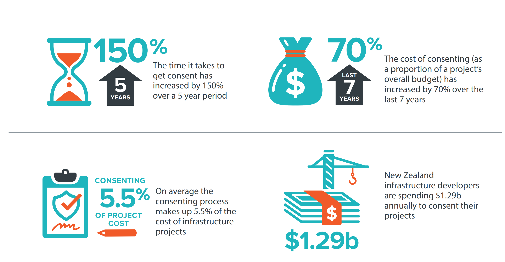
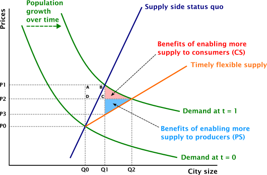

2 Background
New Zealand’s infrastructure – its roads, rails, bridges, waterways, energy facilities, telecommunications networks, and other public assets – support the country’s economic activity, trade and commerce, both domestically and internationally. However, the significant growth in the demand for infrastructure services over the last few decades has not been accompanied with corresponding growth in and maintenance of their supply. This is because infrastructure is not allocated through a price system but through public investments, which implies that an increase in demand does not raise prices or signal the value of increased supply. This lack of supply response has systematically created excess demand for different infrastructure, which leads to overuse, congestion and eventually dampened economic growth.
The country’s infrastructure assets, which are owned and funded by a mixture of central and local government entities as well as private sector stakeholders, are being used far beyond their intended capacities and useful lives. For example, the lack of transport infrastructure increases the costs for Auckland households and businesses from road congestion, with an estimated annual cost of between $0.9 and $1.3 billion (NZIER, 2017).
Having the necessary infrastructure capacity to provide more housing is a driver of house prices. One reason for less permissive planning regulations is the lack of infrastructure to support the brownfield and greenfield growth. Hence, the appropriate timing of the provision of infrastructure contributes to an increase in housing supply and leads to a lower house price (growth). There are multiple issues with the provisions of infrastructure, particularly around the inefficient decision-making around infrastructure investments.
The funding and financing issues and the potential inefficiency of the local government have been cited as drivers of the infrastructure shortage. Discussions have been held regarding the importance of further alignment between legislations, particularly between the Resource Management (RM) system and infrastructure planning, to ensure efficient outcomes from infrastructure investments. The empirical evidence on the efficient use of the available infrastructure and its interaction with other factors of supply, particularly planning regulations,3 is limited.
The general context of this report is in the areas of investment decision-making (how prioritise one project over the other), impact of infrastructure investment on economic growth, overlaid with discussions of infrastructure policy and wellbeing. The present section provides further details on these topics. The policy discussions will be provided in Section 5.1.
2.1 Infrastructure decision delays
Five phases comprise a project’s lifecycle management: initiation, planning, execution, monitoring and control, and closure. In this study, we consider the efficiencies in the first two phases of project management, and the economic costs from lengthier project initiation and planning. We acknowledge that there are potential benefits associated with further investigations during the initiation and planning phases, by improving the initial idea and accounting for a wider range of uncertainties. It is unclear whether the benefits outweigh the costs. Identifying and estimating the potential benefits from delaying a decision (if any) is beyond the scope of our assessment and could be investigated in a future study.
The recent New Zealand Productivity Commission report noted that the existing infrastructure deficit has led to a failure to align investment rates with population growth. The report suggests that it is important to build the assets needed to support more people in the community ahead of time:
“The inability or unwillingness in the past to fund this infrastructure suggests that pre-pandemic rates of inwards migration will not be sustainable in the future.” (New Zealand Productivity Commission, 2021, p. 38)
The Infrastructure Strategy report suggested that there are a range of reasons for delays in the IDM and construction process. This includes poor coordination amongst the organisations making decisions. The report gave the example of the Auckland’s Northern Busway, which was conceptualised in 1987 but not completed until 2008. This 21-year timeframe was caused by the number of planning and funding agencies involved (The Royal Commission, 2009). Another example is Auckland’s second busway, which had a timeframe of over 20 years. The report compared the busway projects’ timeframe with Brisbane’s first busway, which only took six years to complete (it was proposed in 1995 and completed in 2001) (Tanko & Burke, 2015). Since then, two other busways were completed in Brisbane between 2004 and 2011.
As we will discuss in the next sections, the planning timeframe is potentially longer for major infrastructure projects. For example, in the case of Waikato Expressway, there has been a 40-year timeframe between the initiation of the improvements in State Highway 1 extensions between Auckland and Waikato. However, since we do not have a comparable case in other countries, we rely on the examples provided by Infrastructure Strategy and suggest that there is a potential for significant time saving in the IDM’s planning process, from the current 20 years to six years. This is assuming a fixed time needed for the construction of projects across Australia and New Zealand.
Our further investigation of other significant national projects across New Zealand suggests a minimum 15-year timeframe for their completion. For example, the City Rail Link’s (CRL) detailed study of underground route started in 2009 and the project is planned for completion by 2025. The first consultation for the Waterview Tunnel started in 2000 and the tunnel opened in 2017. The Transmission Gully’s public consultation started in 2008 and the project completed in 2022. The Ara Tūhono – Pūhoi to Warkworth route’s public consultation started in 2010 and the road opens in 2023. We suggested that the 15-year timeframe is a minimum planning and construction timeframe because there is at least one year delay between first concepts and public consultation. Also, the timeframe from initiation until preparation of concepts is unclear – this is because it is difficult to define an exact date for the initiation of projects.
Based on this information, we suggest it is reasonable to aim at 7-years timesaving in the IDM process by decreasing the 15-year project completion timeframe to 8 years.
The Infrastructure Strategy refers to the importance of a range of other factors to improve the efficiency of IDMs. An important factor is the role of consenting delays in lengthening the IDM’s planning phase. As shown in Figure 2, the estimated costs of consenting is $1.29 billion per annum (Sapere, 2021. Another important factor is to consider effective financing arrangements, including, for example, public private partnership (PPP).4
Figure 2 $1.29 billion annual cost of consenting projects

Source: New Zealand Infrastructure Commission (2022, p. 136) and Sapere (2021)
There are a range of regulatory requirements for infrastructure projects, primarily driven by the Resource Management Act (1991), Government Policy Statement, Local Government Act, and the National Policy Statement on Urban Development (NPS-UD). We will present these policy frameworks in Section 5.1.
2.1.1 Improved timing of investments and providing flexibility in decision-making process to avoid future bottlenecks
Infrastructure decision delays often lead to insufficient land for housing and business developments. New developments require large upfront investments by councils or developers. Infrastructure can be a bottleneck (McEwan, 2018; Productivity Commission, 2017).5 Mechanisms to connect benefits and costs of growth struggle to provide sufficient infrastructure, even if the land is suitable for house building (Johnson et al., 2018).
The lack of infrastructure has been noted as a constraint that has led to zoning restrictions (Grimes & Liang, 2009; Martin & Norman, 2020.6 Bassett et al. (2013) discussed the monopoly power of local councils in both granting consents and providing infrastructure. They questioned the efficiency of this system in terms of providing infrastructure required for growth and being accountable for that. They specifically refer to the monopoly power of Watercare in Auckland and its power in extracting rents out of developers and not being accountable to ratepayers.
The costs of infrastructure have been noted as a prohibitive factor for recent developments. The operating costs of the infrastructure sector has increased gradually over the last two decades (between 2000 and 2020) by 22 percent – for details, see Appendix A. Grimes and Mitchell (2015) documented the costs of the rules and regulations as perceived by developers. Auckland developers responding to a survey noted that they were asked to fund key community infrastructure beyond that directly related to their own project. Unavailability of infrastructure caused 13 percent of respondents to abandon a project and 38 percent noted that the costs of providing infrastructure influenced abandonment.7
The Productivity Commission’s (2012) housing affordability inquiry suggests that the monopoly power of councils in providing infrastructure to service land and the access to development contributions may incentivise councils to designs that have higher initial capital expenditure.
The Productivity Commission’s (2017) inquiry into better urban planning suggested that supply is rationed reflecting perceived difficulties in financing, recovering costs and burdening existing residents. Limited supply is often the binding constraint to meeting demand for development in high-growth cities. The inquiry called for more cohesive plans linked to infrastructure supply, market-based tools and infrastructure pricing. The inquiry recommended that the long-term infrastructure (and land-use planning) needs to account for the uncertainties involved in the decision-making process.
MRCagney et al. (2016) cited BERL (2016) for the RMA planning process (and infrastructure provision) contributing to a very long time to convert land from current zoning to new business use. Some participants suggested that it took between seven and 15 years to complete this process.8 Parker (2015) noted that houses cannot be built without costly infrastructure, which takes time to plan and deliver with funding and financing challenges.
Skidmore (2014) compared New Zealand housing trends and policies with those of the United States. The author cited Albouy (2009) regarding how the US urban area price differential between undeveloped and developed land on the fringe is approximately equal to the cost of converting agricultural land into development (that is, costs of infrastructure). The author noted that development contributions offer a needed source of infrastructure funding but may also increase housing prices and reduce the construction of more affordable and dense development.
As the Productivity Commission (2017) noted, councils have faced difficulties recovering the full costs of infrastructure from those creating the demand. This has led many councils to ration the supply of new infrastructure, contributing to scarcity and higher land and housing prices. Further investigation of the politically and practically sound funding and financing solutions is currently underway.
2.1.2 Delays are driven by a range of uncertainties
Business cases are an important management tool to ensure infrastructure investments provide value for money. There are multiple guidelines and tools provided by the Treasury and Waka Kotahi to ensure accuracy of business cases (The Treasury, 2022; Waka Kotahi, 2020). Figure 3 shows the strategy and business planning steps, starting from the strategic context. The detailed business case evaluates the social, wellbeing and economic costs, benefits and risks of the short-listed options to identify the preferred option.9
Delays are caused by a range of uncertainties at the planning phase, including demographic and population, macroeconomic, technological, climate change, and political uncertainties. The uncertainties are related to all stages of the strategy and business planning. Principal Economics (2022a) investigated the use of adaptive decision-making to provide further flexibility in the planning phase. The report suggested a range of methods for considering all possible outcomes when selecting options for further investigation. This implies that there are times when the two-stage (or multi-stage) phasing of developments provides the appropriate manner to resolve economic, political and/or technological uncertainties ahead of further irreversible investments, thereby reducing the chance of a white elephant scenario.
2.2 Economic impact of infrastructure investments
The level of infrastructural development influences national competitiveness, and there is strong evidence that transport infrastructure plays a vital role in economic growth (Holmgren & Merkel, 2017; Sahoo & Dash, 2009). The Council of Economic Advisors estimates that a 10-year, US$1.5 trillion program of infrastructure investment could add between 0.1 and 0.2 percentage points to average annual real growth in gross domestic product (GDP) (CEA, 2018). A simple conversion of this figure to the New Zealand size of GDP implies that a $2.45 billion annual infrastructure investment is associated with an average real GDP growth of between $325.5m and $651m.10 These figures are likely to be over-estimated because the multiplier method used for the CEA assessment does not account for economic sectors’ competition for available resources.11
An efficient decision-making process leads to an increase in the supply of different types of infrastructure, including roads, bridges, and water pipes, which leads to an improvement in the features of living environment and housing. >
To provide an economic framework, Figure 4 illustrates the impact of increased supply. Initially, the supply of infrastructure services is at Q0, which implies a price of P0, consisting of the implicit (opportunity) and explicit costs to the consumers of services. With increases in population over time, demand for infrastructure services increases and the demand curve shifts outwards (to Demand at t=1) with a quantity demanded equal to Q1 and the price of P1. A more flexible supply would lead to an increase in quantity of infrastructure services from Q1 to Q2, and a decrease in prices from P1 to P2. This will lead to an increase in existing users’ surplus by the area of the P1-B-C-P2 rectangle. In addition, a portion of population who were crowded out of the market due to their limited affordability could now enter the market and use the services. This includes migrants from overseas or from other regions. Therefore, an infrastructure shortage will lead to a loss in consumer surplus to the new users equal to the red triangle area and a loss in producer surplus equal to the blue triangle area.
Figure 4 Impact of supply shortage

Source: Principal Economics
In the short run, additional infrastructure spending may affect GDP in the year in which the spending occurs, generating direct and possibly indirect economic impacts. If the increased spending is offset by equivalent increases in taxes or declines in spending, then these short-run effects would likely cancel out. However, to the extent that additional spending is financed via increased deficits and the economy is below full employment, the infrastructure spending here would represent net additions to government spending and could therefore generate direct short-term spending impacts, which could then be amplified or diminished by subsequent indirect impacts. >
Recent evidence suggests that the net impact of additional government spending is positive; that is, the spending multipliers exceed zero (Auerbach & Gorodnichenko, 2010; Ramey & Zubairy, 2017). Auerbach and Gorodnichenko found that these multipliers are larger during recessions, while Ramey and Zubairy found no evidence that multipliers are higher during periods of slack. Abiad et al. (2014, 2016) found that increased infrastructure spending, during recessions in particular, can raise GDP through demand-side multiplier relationships.
2.2.1 Impacts of time saving in the IDM process
There is strong evidence that transport infrastructure plays a vital role in reducing trade costs through increased trade facilitation, which leads to higher economic growth (Camisón-Haba & Clemente-Almendros, 2020; Holmgren & Merkel, 2017; Timilsina et al., 2020). The transportation data firm INRIX (2019) estimated that the congestion costs of each American for nearly 100 hours account for approximately US$1400 a year. Regarding road transport, the American Transportation Research Institute (2018) estimated that traffic delays in the trucking industry cost US$74 billion every year. Graham et al. (2020) argued that optimal time, costs, and quality are three critical issues for infrastructure decision-making. The discussed that although New Zealand’s ease of doing business performance is quite impressive and is top globally, the country’s overall productivity is relatively low compared to the OECD average. According to the New Zealand Productivity Commission (2021), Kiwis work relatively long hours: 34.2 hours per week compared with 31.9 hours per week in other OECD countries. However, New Zealanders produce less: $68 of output per hour compared with $85 of output per hour in other OECD countries. This lower labour productivity could be driven by lower capital–labour intensity, including infrastructure. Camisón-Haba and Clemente-Almendros (2020) empirically explored how transport costs influence trade, supply chain, and a country’s global competitiveness.
Transport-related costs are a significant issue in the agri-based industry due to goods’ bulk size and perishable nature. New Zealand’s most prominent categories of exports are agricultural and horticultural and highly dependent on Chinese and Australian export markets, which comprise two-thirds of its exports. New Zealand’s export intensity (27 per cent) is the lowest among small OECD economies and is poorly integrated with global value chains (GVCs),12 partly due to its geographical isolation and poor physical infrastructure, and high trade costs. Hummels and Schaur (2013) estimated that each day in transit is equivalent to an ad-valorem tariff of 0.6–2.3 percent. Transport-related trade costs may be one of the main reasons for higher market costs, leading to the higher market price of goods but lower profit margin in New Zealand. Efficient physical transport has a significant positive impact on trade facilitation, logistics services, supply chain management and the cost of doing business, which leads to increased economic activities.
Under this background, we have estimated the impact of the Waikato Expressway in terms of its benefits for inter-regional trade. Products that are made in one region and need to be shipped to other regions for domestic consumption or export face a transport cost. Therefore, there is a gap between the price of a commodity at origin and the final price consumers are paying. In our study, we ask, “If the Waikato Expressway wouldn’t exist, how much cost would be imposed on the NZ economy due to higher transport costs?” The counterfactual in our model is to not have the Waikato Expressway in the economy. Therefore, our results show the annual impact of the Expressway. With each year’s delay in the construction of the Waikato Expressway, this cost is imposed on the NZ economy.
2.3 Wellbeing context
Efficient infrastructure decisions lead to an improvement to different domains of wellbeing and contribute to a resilient economic growth. This is consistent with the schematic presented in Figure 5, which shows the contribution of efficient infrastructure decisions to businesses, communities, labour force, and environment, leading to improvements in the four capitals (as identified in the Treasury’s (2021) Living Standard Framework). The impact of timely infrastructure investments on quality of life and quality of business, leads to changes in the choice of location of skilled labour, affecting the prospects of growth across cities and regions, as well as other features of living environment.
Planning regulation refers to the policies and rules – largely contained in district plans – that govern the use and development of land in and around cities. Key examples analysed in the literature examined in this section include urban boundaries, height restrictions, viewshaft corridors, minimum carpark requirements and restrictions on infill development.↩︎
Te Waihanga – Infrastructure Commission Infrastructure Strategy report suggests that the current PPPs in New Zealand have been delivered on-time and on-budget for the Crown, with delays of less than six months.↩︎
Author notes the costs of providing infrastructure is underestimated. It is also noted as being seen by planners as the most important constraint by a considerable margin.↩︎
Bassett et al. (2013) estimated the council costs for roads, footpaths, drains, and other infrastructure at around $85,000 per section, the cost of water and sewerage at around $20,000 per house, and the cost of building consent at around $40,000 per house. Except for the cost of building consent, which is sourced from the Statistics New Zealand Official Yearbook (2008), the authors do not provide their calculations/sources for other cost estimates.↩︎
Additionally, developers feel that Watercare and Auckland Transport were engaging in monopolistic behaviour to force them to fund upgrades and expansion of infrastructure where the benefits extended beyond their development. Some developers abandoned their projects due to issues over access to infrastructure or cost of upgrading the existing infrastructure. In this survey, respondents (developers) could give multiple responses, which is why totals do not add to 100 percent.↩︎
Authors note that building infrastructure too early will mean additional costs due to the opportunity cost of capital – 10 years in advance imposes a cost of $36,874 per dwelling and five years ahead is associated with a cost of $17,938 per dwelling.↩︎
The preferred option is the one that leads to optimum public value for delivery of the project.↩︎
This figure provides an estimate of the potential impact of infrastructure investment. However, the return on investment and the structure of the New Zealand economy are significantly different from that of the US.↩︎
This implies that an increase in infrastructure investments comes at a cost to other sectors of the economy in terms of the allocation of labour and capital.↩︎
For The Treasury’s (2019) living standard framework, see here.↩︎